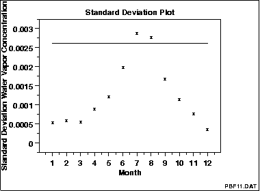

|
1.
Exploratory Data Analysis
1.3. EDA Techniques 1.3.3. Graphical Techniques: Alphabetic
|
|||
|
Purpose: Detect Changes in Scale Between Groups |
Standard deviation plots are used to see if the standard
deviation varies between different groups of the data.
The grouping is determined by the analyst. In most cases,
the data provide a specific grouping variable. For
example, the groups may be the levels of a factor variable.
In the sample plot below, the months of the year provide the
grouping.
Standard deviation plots can be used with ungrouped data to determine if the standard deviation is changing over time. In this case, the data are broken into an arbitrary number of equal-sized groups. For example, a data series with 400 points can be divided into 10 groups of 40 points each. A standard deviation plot can then be generated with these groups to see if the standard deviation is increasing or decreasing over time. Although the standard deviation is the most commonly used measure of scale, the same concept applies to other measures of scale. For example, instead of plotting the standard deviation of each group, the median absolute deviation or the average absolute deviation might be plotted instead. This might be done if there were significant outliers in the data and a more robust measure of scale than the standard deviation was desired. Standard deviation plots are typically used in conjunction with mean plots. The mean plot would be used to check for shifts in location while the standard deviation plot would be used to check for shifts in scale. |
||
| Sample Plot |

This sample standard deviation plot shows
|
||
|
Definition: Group Standard Deviations Versus Group ID |
Standard deviation plots are formed by:
|
||
| Questions |
The standard deviation plot can be used to answer the
following questions.
|
||
|
Importance: Checking Assumptions |
A common assumption in 1-factor analyses is that of equal variances. That is, the variance is the same for different levels of the factor variable. The standard deviation plot provides a graphical check for that assumption. A common assumption for univariate data is that the variance is constant. By grouping the data into equi-sized intervals, the standard deviation plot can provide a graphical test of this assumption. | ||
| Related Techniques |
Mean Plot DOE Standard Deviation Plot |
||
| Software | Most general purpose statistical software programs do not support a standard deviation plot. However, if the statistical program can generate the standard deviation for a group, it should be feasible to write a macro to generate this plot. | ||